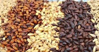
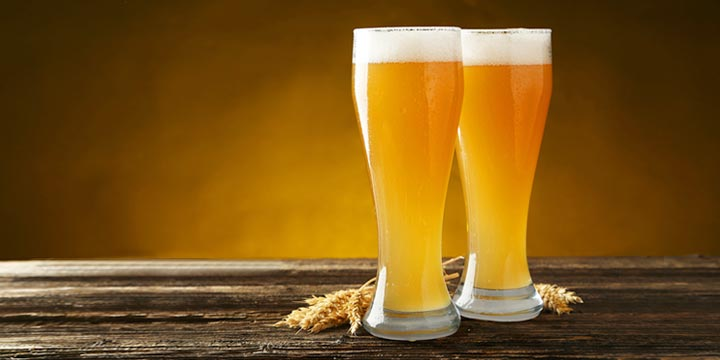
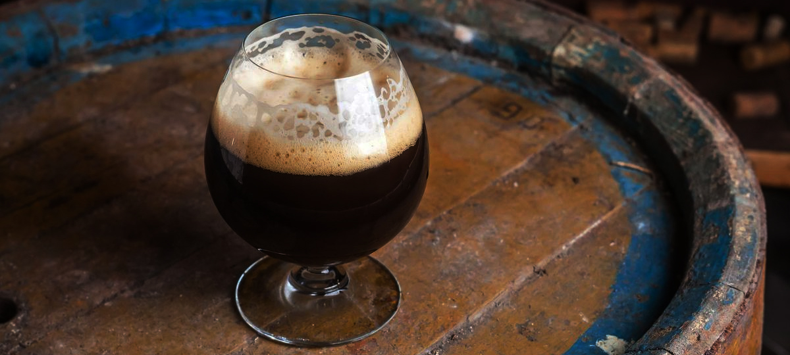
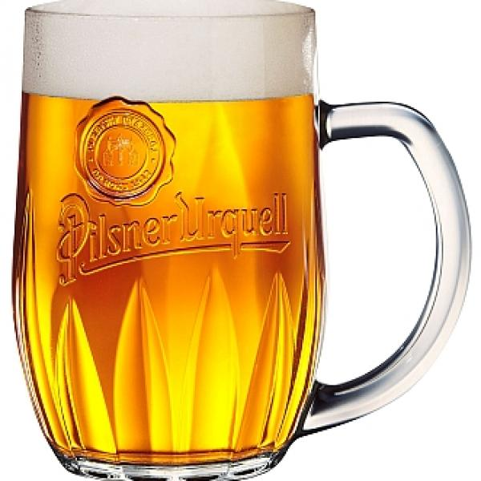
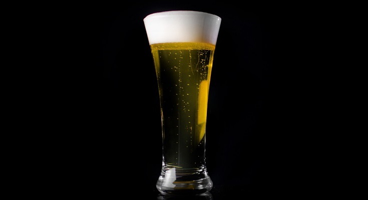
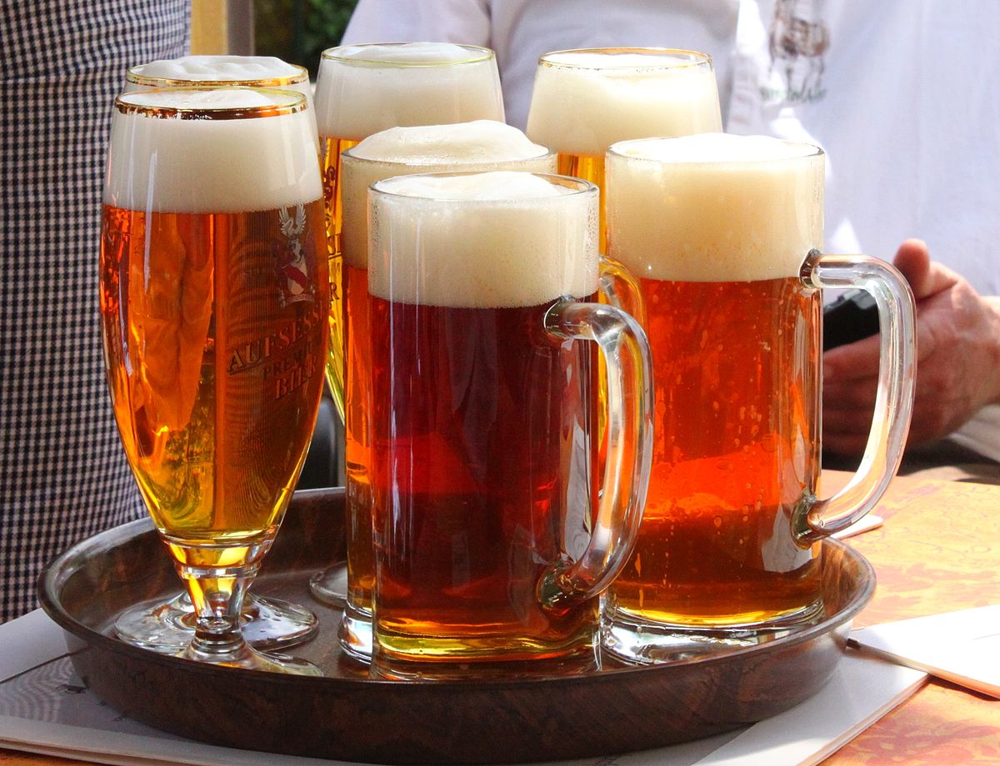

Qué es Cerveza?
La cerveza (del latín cerevisĭa) es una bebida alcohólica, no destilada, de sabor amargo, que se fabrica con granos de cebada germinados u otros cereales cuyo almidón se fermenta en agua con levadura (principalmente Saccharomyces cerevisiae o Saccharomyces pastorianus) y se aromatiza a menudo con lúpulo, entre otras plantas. Es la bebida alcohólica más consumida del mundo, y una de las bebidas más consumidas, solo por detrás del agua, el té y el café.
De ella se conocen varios tipos con una amplia gama de matices, debidos a las diferentes formas de elaboración y a los ingredientes utilizados. Generalmente presenta un color ambarino con tonos que van del amarillo oro al negro pasando por los marrones rojizos. Se la considera «gaseosa» (contiene CO2 disuelto en saturación que se manifiesta en forma de burbujas a la presión ambiente) y suele estar coronada de una espuma más o menos persistente. Su aspecto puede ser cristalino o turbio. Su graduación alcohólica puede alcanzar hasta cerca de los 20 % vol., aunque comúnmente se encuentra entre los 4 % y los 6 % vol.
Cerveza artesanal
Las cervezas artesanales son cervezas sin aditivos ni conservantes y sin pasteurizar. Están vivas y son un producto evolutivo, que cambia cada día un poco, con presencia de levadura viva (visible o no). Se producen mediante un proceso natural a partir del grano, malta, sin utilizar extractos ni productos diferentes del agua, levadura, lúpulo y el cereal para hacer la malta
El sistema de elaboración consta de cinco etapas básicas: maceración, cocción, enfriamiento, fermentación (la primera en un fermentador y la segunda en la misma botella) y envasado. Para garantizar la calidad del producto los lotes de producción de cerveza artesana tienen un máximo de 7500 litros por caldera de cocción. No se admite el uso de calderas de gelatinización, con el objetivo de obtener fuentes extras de azúcares a partir de ingredientes como el maíz o el arroz. La gasificación de la cerveza se hace de forma natural durante la segunda fermentación.
El proceso artesano tiene que ser un proceso "todo grano" que parte del grano (malteado o no). No se admite ningún tipo de extracto (ni de maltas ni de lúpulos) para la obtención del mosto de la cerveza. Tampoco se admite el uso de aditivos ni coadyuvantes tecnológicos (antioxidantes, conservantes, colorantes, estabilizantes, etc.) sintéticos. En algunas variedades la composición puede incluir también otras materias primeras naturales por aromatizarlas (azúcares, especias, frutas, etc.).
Principales Ingredientes
- Agua
- Cereales 
- Lúpulo
- Levadura
Clasificación de la cerveza artesanal
Existen diversos criterios de clasificación de las cervezas, una de las mas reconocidas es por el tipo de fermentación que realiza la levadura, Tipo ALE de fermentación baja y las de fermentación Tipo LAGER de fermentación alta.
| Tipo ALE | Weizenbier  | Pale Ale  |
Stout  | Neipa |
|---|---|---|---|---|
| Tipo LAGER | Pilsner  | American Lager  | German Lager  | European Lager  |